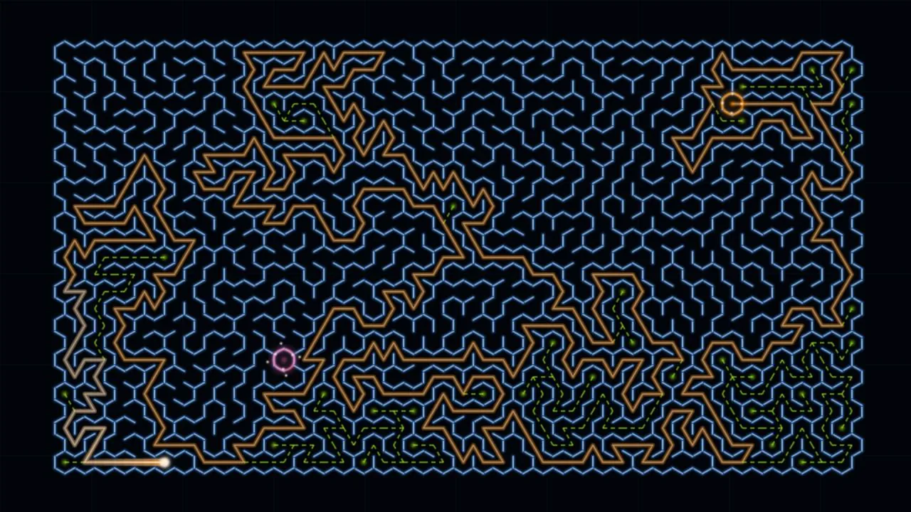
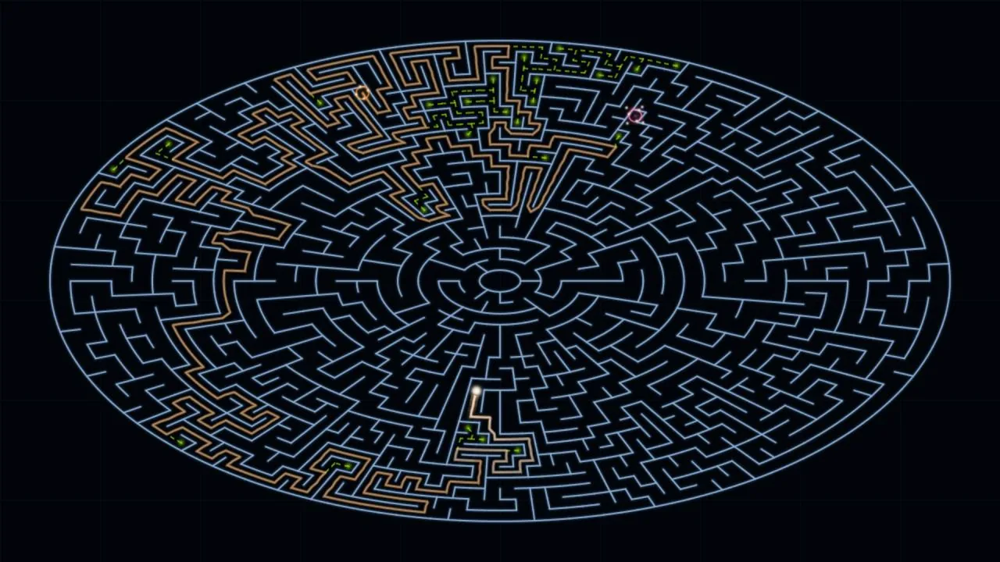
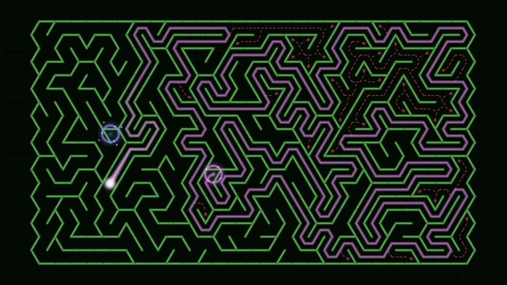
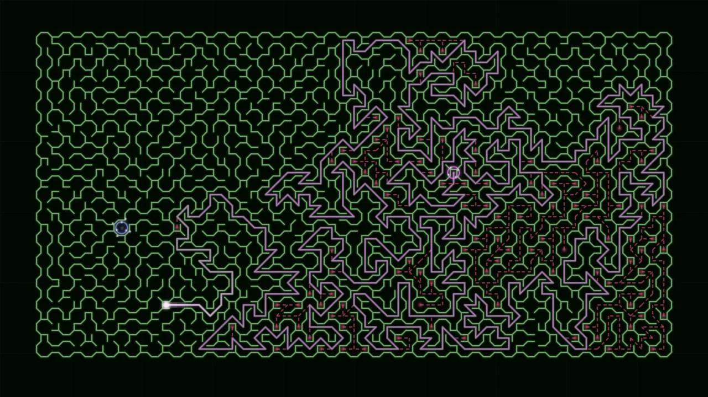
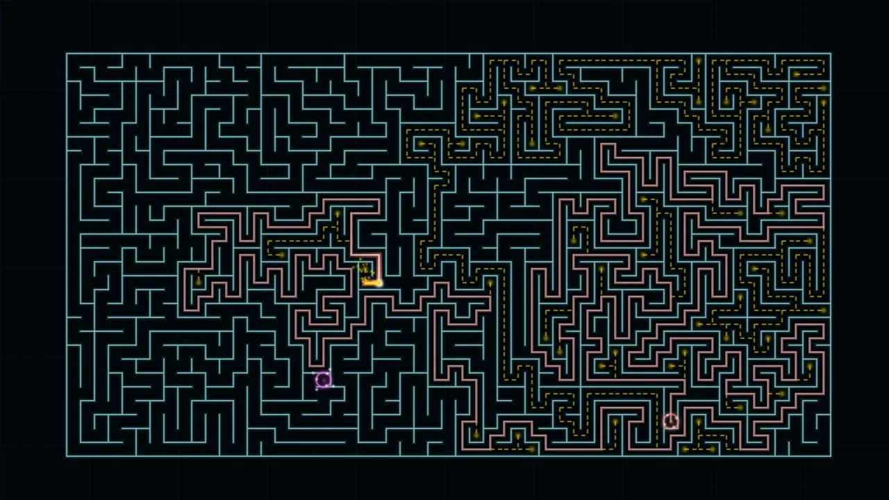

A screensaver for Roku TVs and players
Watch the maze think.
Endless neon mazes in five shapes build themselves, hunt down dead ends, and light up the solution — different every time. It takes over whenever your Roku goes idle, and any button on the remote brings you back.
- Install it from the Roku Channel Store on your Roku or on the web.
- On your Roku, open Settings → Theme → Screensavers.
- Pick Neon Labyrinth. It starts on its own when the screen goes idle.
Five maze shapes
Not just squares anymore.
Every cycle picks a shape at random — or check only the ones you want in the rotation. Each shape is a genuinely different maze: its own cell geometry, its own corridors, its own way of getting lost.





All five are on by default. Under Screensaver settings on your Roku, each shape is a checkbox — uncheck the ones you'd rather not see. At least one always stays on.
One cycle, under two minutes
Built. Solved. Celebrated. Repeat.
Construction
Walls draw themselves across the dark and energize with a soft neon glow. Prefer stillness? Turn construction off and each maze fades in complete.
The solve
A comet-headed beam leaves the warp ring and hunts for the far gate — honestly. Wrong turns burn down into ember scars, and the whole explored route stays lit, brightest near the head.
Celebration
The route home ignites, holds a moment, and fades to black. Then a fresh seed, a fresh shape, a fresh palette. No two cycles repeat.
What you get
A screensaver with something at stake
Five maze shapes
Rectangle, hexagon, triangle, oval, and upsilon — random per cycle, or check just the ones you like.
five geometries · one solver
Endless procedural mazes
Every cycle generates a new maze on your device and proves it solvable before a single wall glows.
three complexities · ~530 / ~990 / ~1,650 cells, on every shape
A solver that earns it
No shortcuts and no script — the beam explores like you would, hits real dead ends, and backtracks in plain sight.
depth-first search · every failure stays visible
Five palettes, plus Auto
Electric Cyan, Ultraviolet, Magenta Circuit, Emerald Pulse, Solar Neon — or let Auto invent a brand-new neon scheme every cycle.
auto mode · generative, never repeats itself
Your pace
Set maze complexity and solver speed to taste, skip the construction phase if you prefer stillness, or switch on reduced motion for gentler pulses and no rapid flashes.
full cycles stay under two minutes
Offline and private
No account, no ads, no analytics, nothing transmitted. Settings live on your Roku and nowhere else.
read the whole privacy policy · it's six sentences
Quick answers
Before you ask
How do I turn it on?
After installing: Settings → Theme → Screensavers → Neon Labyrinth. It starts on its own when your Roku goes idle, and any button on the remote ends it instantly.
Is it a channel or a screensaver?
A screensaver. It doesn't add a tile to your channel row and there is nothing to launch — once installed, choose it under Settings → Theme → Screensavers and it runs whenever your Roku sits idle. It works on Roku TVs and on streaming players and sticks alike.
Can I pick which shapes appear?
Yes. Settings → Theme → Screensavers → Neon Labyrinth → Change screensaver settings. Under Maze shapes, each shape is a checkbox; all five start checked. Leave one on and you'll only ever see that shape.
Does it collect anything?
No. No account, no tracking, no ads, no network use at all. See the privacy policy.
What does it cost?
$1.99, once, through the Roku Channel Store. No subscription, no in-app purchases — there is nothing in it to buy.
Something's not right.
Head to support — setup steps, troubleshooting, and a real email address.